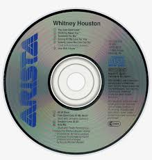
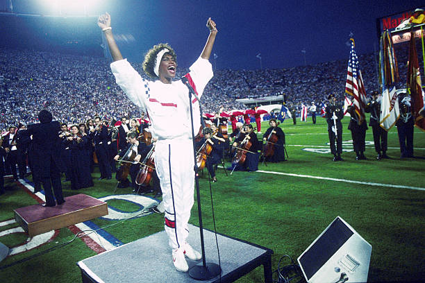
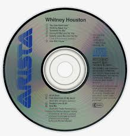
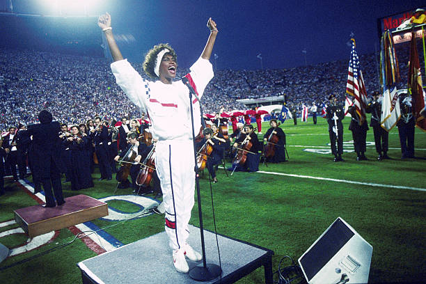
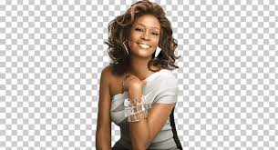

Whitney Houston's Photos
|  | |
|  |
|  | |
|  |
Whitney Elizabeth Houston - an American singer and actress, nicknamed "the Voice", she is one of the best-selling music artists of all time, with over 220 million records sold worldwide. In 2023, Rolling Stone named her the second-greatest singer of all time. Houston influenced many singers in popular music, and was known for her powerful, soulful vocals, vocal improvisation skills, and use of gospel singing techniques in pop music. She had 11 number-one singles on the Billboard Hot 100 and is the only artist to have seven consecutive number-one singles on the chart.
View PageHouston won numerous accolades, including two Emmy Awards, eight Grammy Awards (including two Grammy Hall of Fame honors), fourteen World Music Awards, sixteen Billboard Music Awards (45 Billboard awards in all) and twenty-two American Music Awards. Houston holds the record for the most American Music Awards received in a single year by a woman with eight wins in 1994 (overall tied with Michael Jackson). Houston was the first artist at the Billboard Music Awards to win more than 11 awards in one night at its fourth annual ceremony in 1993, which set a Guinness World Record at the time. Houston continues to hold the record for the most WMAs won in a single year, winning five trophies at the sixth World Music Awards in 1994.
 More InfoOn February 11 2012, Houston was found unconscious in Suite 434 at the Beverly Hilton, submerged in the bathtub. Beverly Hills paramedics arrived about 3:30 pm, found Houston unresponsive, and performed CPR. Houston was pronounced dead at 3:55 pm PST. The cause of death was not immediately known; local police said there were "no obvious signs of criminal intent". On March 22, 2012, the Los Angeles County Coroner's Office reported that Houston's death was caused by drowning and the "effects of atherosclerotic heart disease and cocaine use". The office said the amount of cocaine found in Houston's body indicated that she used the substance shortly before her death.
Read More